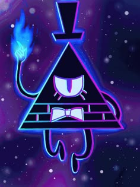
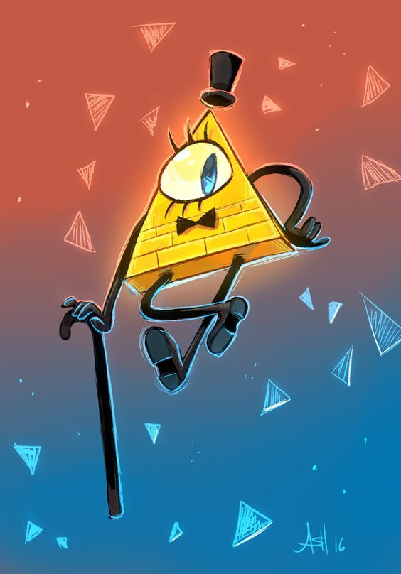
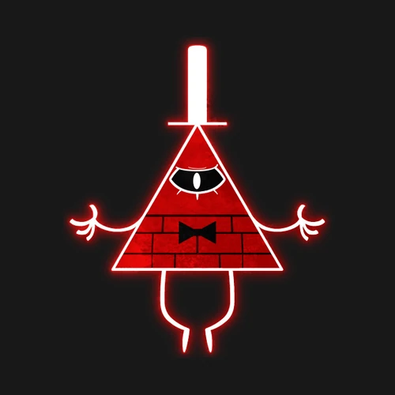

Всевидюче око: Білл Шифр (Bill Cipher)
Білл Шифр — це головний антагоніст серіалу "Гравіті Фолз". Він є демоном розуму, який прийшов з Виміру Кошмарів, щоб посіяти хаос у нашому світі.
Він дуже могутній і водночас неймовірно божевільний.
Запам'ятайте: ніколи не тисніть йому руку, навіть якщо вона палає синім вогнем!
Його неможливо зупинити — хоча родина Пайнс довів зворотне.
Галерея демона:



УКЛАСТИ УГОДУ З БІЛЛОМ
Що він любить:
- Укладати вигідні (для себе) угоди
- Створювати вечірки хаосу
- Дивне почуття гумору
Етапи його плану:
- Проникнути в розум Стенфорда
- Відкрити міжвимірний розлом
- Влаштувати Дивногедон